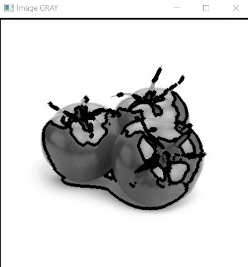
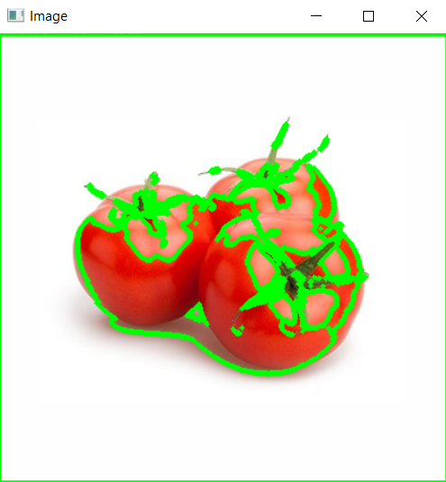

Draw Contours
Contours can be explained simply as a curve joining all the continuous points (along the boundary), having same color or intensity. The contours are a useful tool for shape analysis and object detection and recognition.For better accuracy, use binary images. So before finding contours, apply threshold or canny edge detection. Since OpenCV 3.2, findContours() no longer modifies the source image but returns a modified image as the first of three return parameters.
In OpenCV, finding contours is like finding white object from black background. So remember, object to be found should be white and background should be black.
Sample Image

Code
1 2 3 4 5 6 7 8 9 10 11 12 13 14 15 16 17 | import numpy as np import cv2 img = cv2.imread('tomatoes.jpg') imgray = cv2.cvtColor(img, cv2.COLOR_BGR2GRAY) ret, thresh = cv2.threshold(imgray, 127, 255, 0) #cv2.findContours(Threshold,contour_mode,contour_approximation_method) contours, hierarchy = cv2.findContours(thresh, cv2.RETR_TREE, cv2.CHAIN_APPROX_NONE) cv2.drawContours(img, contours, -1, (0, 255, 0), 3) cv2.drawContours(imgray, contours, -1, (0, 255, 0), 3) cv2.imshow('Image', img) cv2.imshow('Image GRAY', imgray) cv2.waitKey(0) cv2.destroyAllWindows() |
Output

Test the code with your own images
Completed Successfully